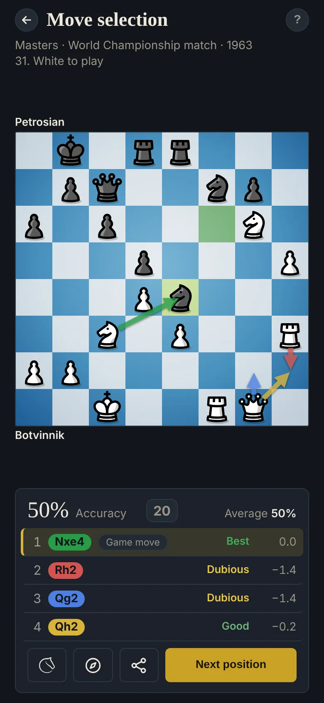

How to choose the best move in chess
Finding good moves is half the job. The other half is choosing: several moves look fine, and only one is best. Move selection trains that last decision.

How the exercise works
You get four moves for the side to play: rank them, best first. One of them was played in the game. In master games, the master's move is often the best, but not always. In your own games, it's your move, and it's always a mistake: the exercise gives you another shot at a decision you got wrong.
The score rewards the top of the ranking most: 1st place counts for 50%, 2nd for 30%, 3rd for 20%. Each place is compared with the best move left, so a good second choice still scores even if the first one was wrong. The review shows Stockfish's grade and evaluation for each move.
How to choose
- Find the best move first: it's half the score, and in a game it's the whole point.
- Check what each move allows: a move that drops material or exposes the king goes last, however active it looks.
- Compare against the plan: with the imbalances in mind (see Imbalance reading), the move that serves your edge usually beats the one that looks busy.
Your own games
Connect Lichess, or add your Chess.com username, and the app goes through your recent games, finds the moments you went wrong, and turns them into exercises. You meet your real decisions again, with the better moves beside yours.
Try it
Move selection is one of four exercises on ChessStrategy.org, free and without ads. Positions come from master games, such as World Championship matches, and from your own Lichess and Chess.com games. Answers are checked with fixed counting rules and Stockfish, which runs in your browser.